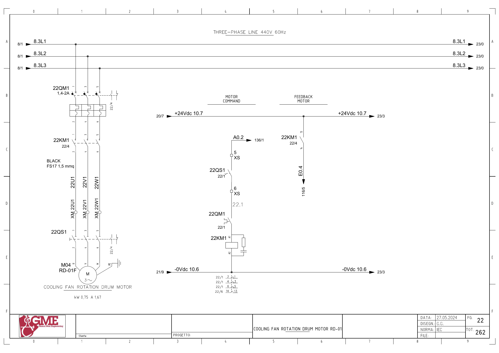

RD01-FAN · 드럼 모터 냉각팬 전기 회로 추적
원본 전기도면을 시각 확인한 정적 회로 해석입니다. 현재 배선·입력 극성·파라미터와 현장 측정은 미확인입니다. 전기 작업은 승인된 현장 절차와 자격 범위에서 수행합니다.
1. 도면의 구성과 진단 경계
FG22: M04 RD-01F(도면0.75kW·1.67A), 22QM1·22KM1·22QS1의 직접 기동 회로입니다.
기동 출력과 응답은 드럼 주모터의 Q0.1·I0.2와 다릅니다. 피드백은 접촉기 보조접점이며 실제 팬 회전을 별도로 관찰합니다.
추가 시공도면 · 접속함·케이블·배관 경로 — 승인·현재 설치는 확인 전입니다.
2. 냉각팬 기동
A0.2 ↔ 백업 %Q0.2 / start fan rd01 · FG22 · PDF 23
- A0.2 (FG136/1)
- XS:5 → 22QS1 보조접점 → XS:6
- 22QM1 보조접점
- 22KM1 코일 A1→A2 / 0Vdc10.6
전달·사용 위치: 원본1939의 Start Fan RD01 출력과 별도 팬 요청,1788의2초 고장 감시를 연결합니다. 주모터 회로20AS1의 DI1과 구분합니다.
진단 판단: Q0.2=1인데 접촉기가 붙지 않으면 개폐기·차단기·코일 전달을 확인합니다. 접촉기가 붙어도 팬 회전·풍량 정상 여부는 별도 관찰합니다.
원본 심볼 직접 참조: 1788 / allarms 1 / ORef 362 · 1939 / motors 1 / ORef 294
3. 접촉기 응답
E0.4 ↔ 백업 %I0.4 / rd01f_fbk · FG22 · PDF 23
- +24Vdc10.7 → 22KM1 보조접점13→14
- E0.4 → FG116/5
전달·사용 위치: 내부 Inputs.Fan RD01 run의 알람·주모터 연동을 확인합니다. 물리 입력의 전체 전달은 미확정입니다.
진단 판단: 보조접점 응답만으로 임펠러·모터·기계부가 정상이라고 판단하지 않습니다.
원본 심볼 직접 참조: 1020 / time work motor / ORef 1234
위 직접 참조는 복원 원본의 같은 심볼명 위치입니다. 읽기·쓰기 역할, 현재 호출, 현장 사용을 함께 확정한 표는 아닙니다. 원본의 simulation 블록 참조가 있더라도 이번 작업에서 가상 실행·개발·시험은 진행하지 않았습니다.
원본 PLC와 연결
남은 확인과 기록
- 실물 냉각팬 명판·설치·회전과 접촉기 응답 대조
- 드럼 기동·정지 후 냉각팬 정책과 잔존 요청 확인
도면을 함께 확인
FG 22 · 해당 도면 보기

| 기록 항목 | 내용 |
|---|---|
| 현장 식별 | 설비 ID / 반·단자대 / 모터·인버터 명판 / 도면 개정 |
| 신호 구간 | PLC 명령 / 단자 / 직렬 접점 / 릴레이 / DI / 응답 접점 / 입력 / 내부 DB |
| 관찰 결과 | 시각 / 운전 모드 / 기준값의 근거 / 관찰값 / 최초 불일치 구간 |
| 복구 확인 | 원인·조치 / 원인 해제 / Reset / 재요청 / 주변 설비 영향 |